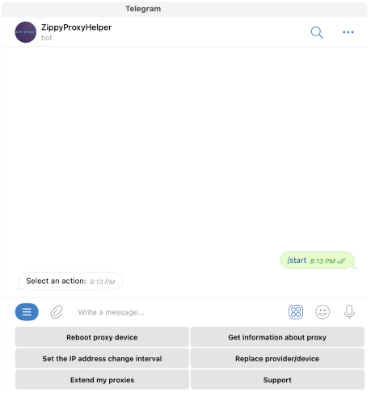

Мобильные прокси под ваши задачи D proxy
Регистрируйте мульти-аккаунты, парсинг данных, обход блокировок, анонимность в сети и многое другое
С нами удобно работать
Шаг 1
Приобрести прокси легко и удобно в нашем Телеграм-боте. Вам даже не нужно общаться с менеджерами
Все данные о купленных прокси придут вам в Телеграм и на почту

Шаг 2
После покупки или взятие на тест Вам станет доступен личный кабинет, так же удобно не выходя их телеграма.
- Получить данные о прокси
- Перезагрузить устройство
- Сменить провайдера
- Установить интервал смены IP
- Продлить свои прокси
Преимущества DPROXY
-
Настоящие
SIM-карты -
Стабильность и скорость
-
Неограниченный трафик
-
Собственное оборудование
-
Безопасность работы
-
Смена IP адреса
по ссылке -
Смена IP авто
от 1 до 999 минут -
3 вида OS fingerprint
(не подмена)